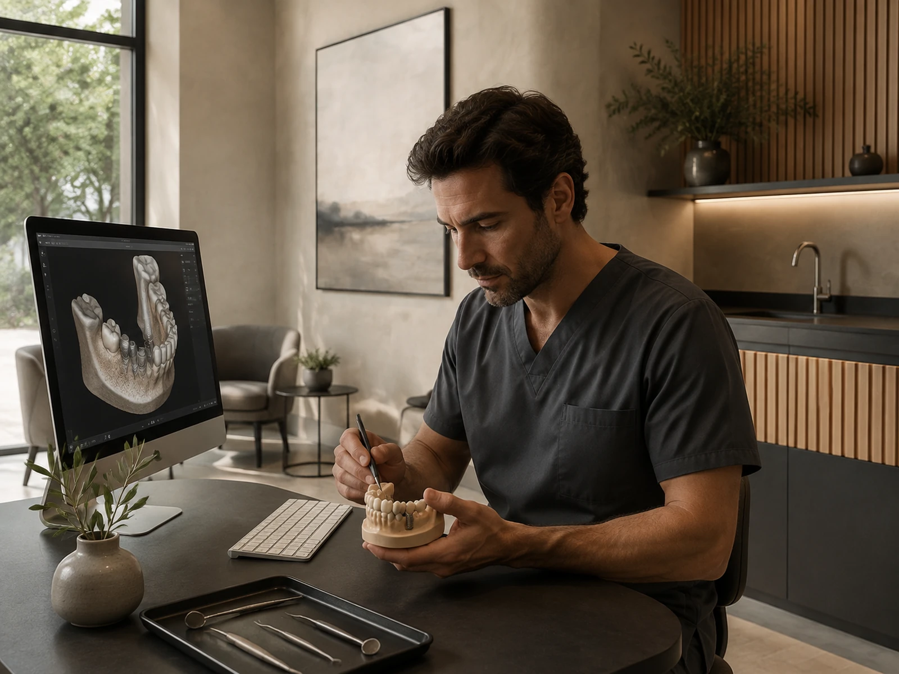
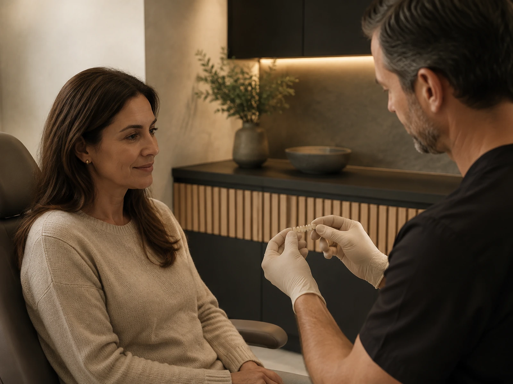
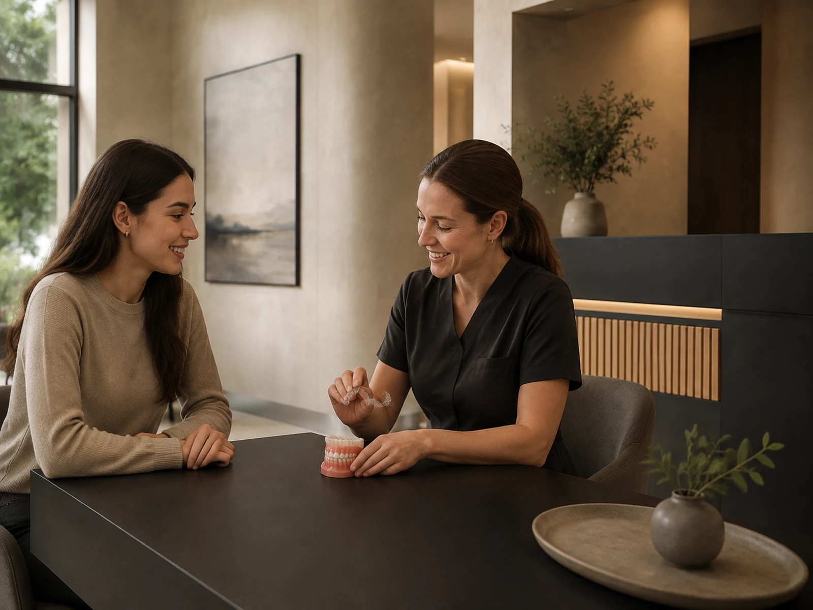
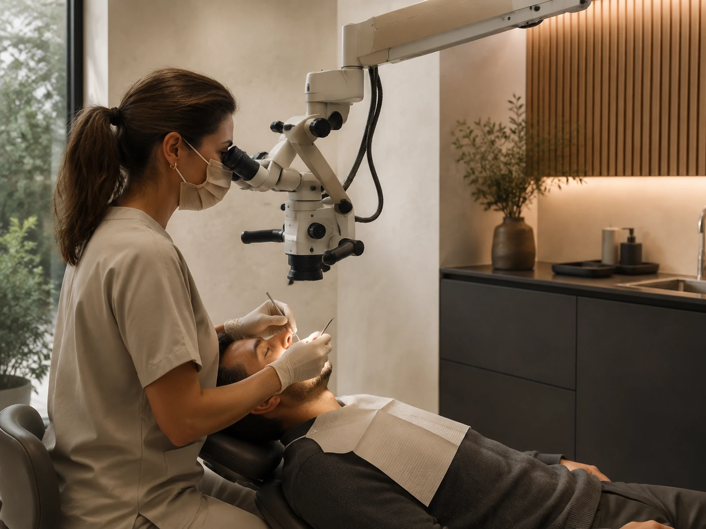
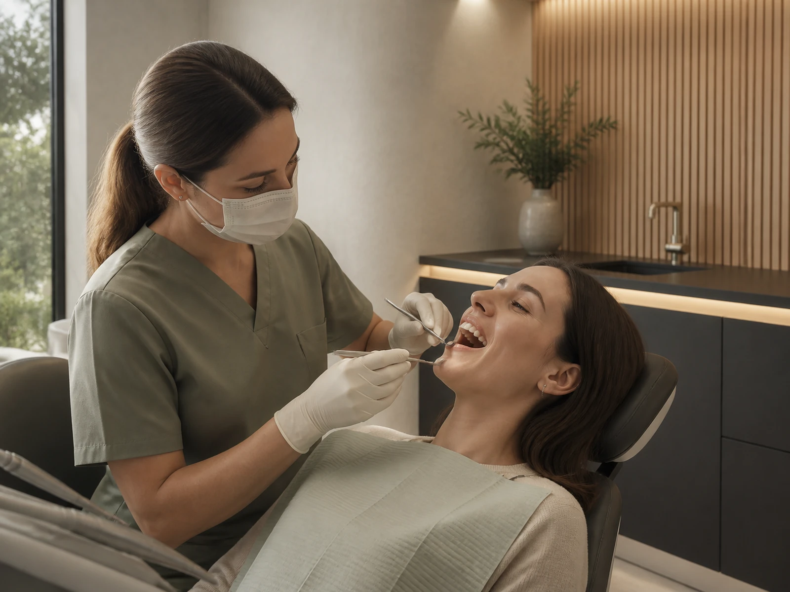
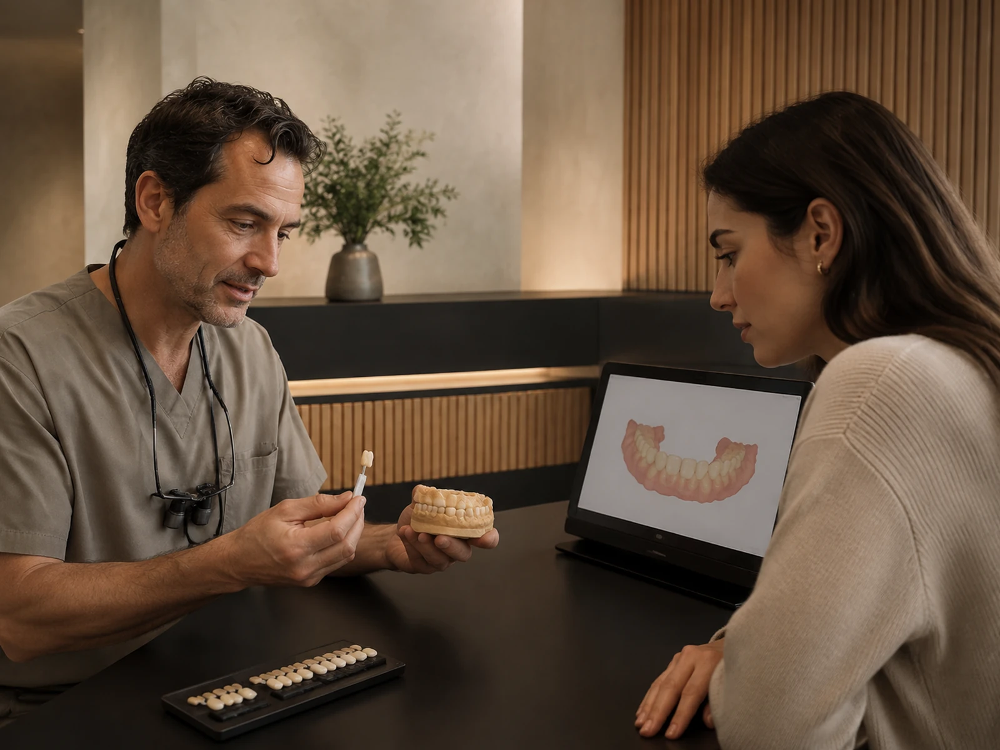
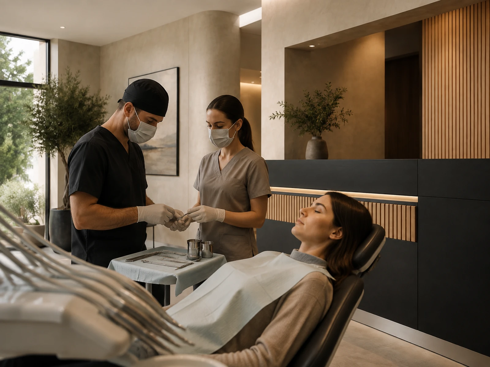
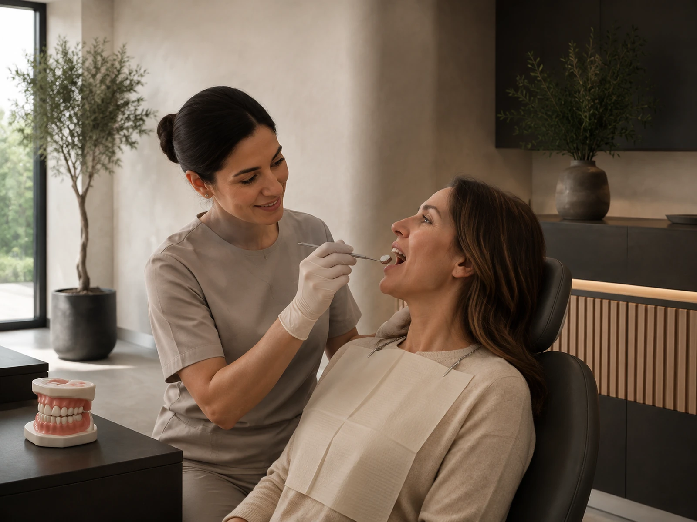
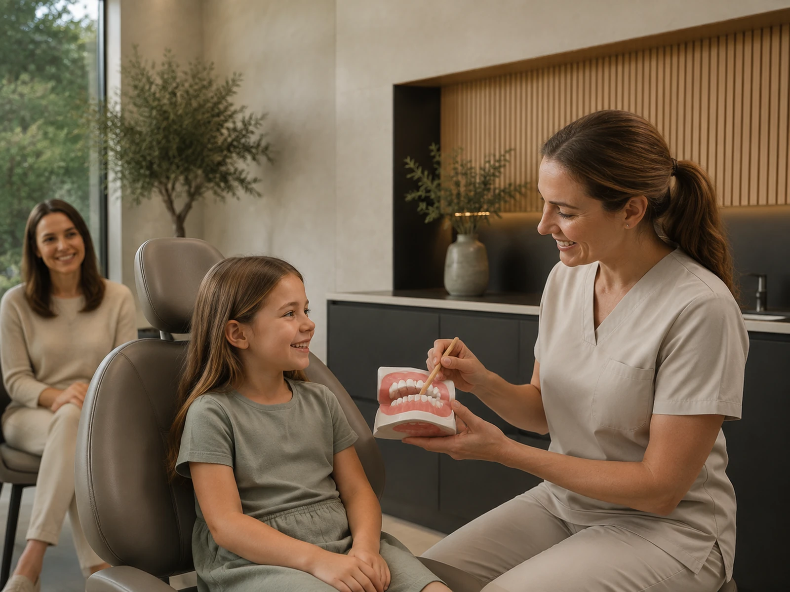
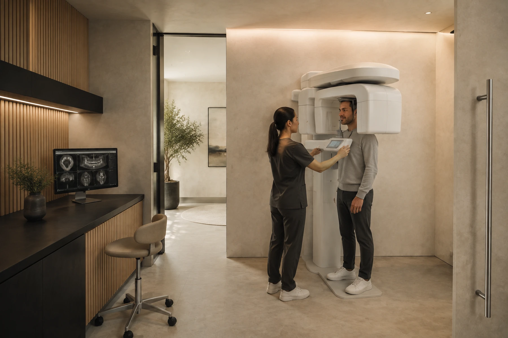

01 / Implantologie
Un nou început. Cu o bază solidă.
Reconstruim funcția și estetica zâmbetului folosind planificare modernă și soluții adaptate fiecărui caz.
de la 2.100 lei
Descoperă tratamentulServicii
Un singur loc. Un plan complet. De la prima consultație la îngrijirea pe termen lung.

01 / Implantologie
Reconstruim funcția și estetica zâmbetului folosind planificare modernă și soluții adaptate fiecărui caz.
de la 2.100 lei
Descoperă tratamentul
02 / Estetică dentară
Albire și restaurări atent planificate, în armonie cu trăsăturile tale și sănătatea dinților.
de la 650 lei
Descoperă tratamentul
03 / Ortodonție
Aparate dentare și un plan de tratament care urmărește echilibrul dintre funcție și estetică.
de la 2.900 lei / arcadă
Descoperă tratamentul
04 / Endodonție
Tratamente de canal realizate cu atenție la detalii, cu ajutorul microscopului dentar.
de la 900 lei
Descoperă tratamentul
05 / Stomatologie generală
Consultații, prevenție și tratamentul cariilor, pentru o bază sănătoasă a zâmbetului.
de la 120 lei
Solicită o consultație
06 / Protetică dentară
Coroane și lucrări protetice alese în funcție de nevoile funcționale și estetice.
de la 550 lei
Solicită o consultație
07 / Chirurgie dento-alveolară
Evaluare atentă, intervenții planificate și îndrumare pentru perioada de recuperare.
de la 190 lei
Solicită o consultație
08 / Parodontologie
Evaluarea și îngrijirea țesuturilor care susțin dinții, cu un plan personalizat.
Plan și tarif stabilite la consultație
Solicită o consultație
09 / Pedodonție
Vizite adaptate copiilor, cu răbdare, explicații simple și atenție pentru prevenție.
Plan și tarif stabilite la consultație
Solicită o consultație
10 / Radiologie & CBCT
Investigații imagistice recomandate în funcție de nevoia clinică și diagnosticul urmărit.
de la 40 lei
Solicită o consultațieTarife demonstrative. Costul final se stabilește în urma consultației și a planului individual de tratament.
SUNTEM AICI PENTRU TINE
Un plan clar începe cu întrebările tale.